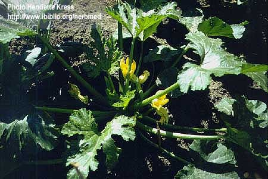
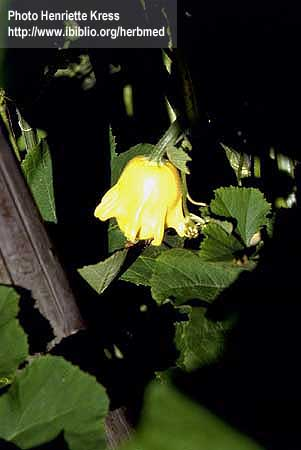
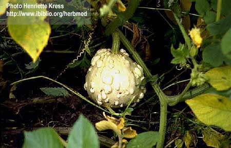
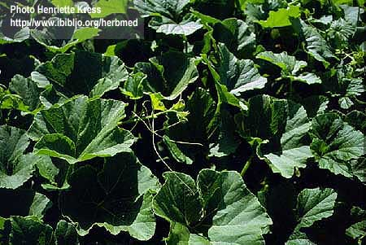
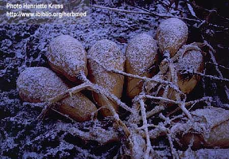

Cucurbita pepo
Linn.
Taxonomic Details

----- Correct Name
----- Classification
----- Synonyms
----- Common Names
Other Biological Details
----- Habit and Habitat
----- Diagnostic Features
----- Reproductive Biology
---------- Breeding System
---------- Phenology
---------- Pollinators
---------- Seed Biology
----------Seed
Germination
------ Cultivation
----- Major Pests and Diseases
Economic Potential and Uses
----- Parts Used
-----Uses
----- Harvesting Practices
----- Produce and Products
----- Chemistry
----- Processing Techniques
----- Other uses
----- Economic Potential to the Country
----- Export Potential
Miscellaneous Information
Literature
Taxonomic
Details
Correct Name
:Cucurbita pepo Linn.


Family : Cucurbitaceae
Synonyms : Cucurbita pepo, Roxb.
Common Names :
English: Field pumpkin, Vegetable Marrow,
Summer squash
Hindi: Kumra, safed Kaddu, Konda, Kadimah
Bengali:Dhudul;
SAnskrit:Kurkaru
Tamil: soraikayi.
Kannada: Dilpasand, Kumbala Kayi
Marati: Kashi bhopla;
Misc:
Kash: Kaashiral;
Ori: Golu phuti kakuri;
Back to Top
Other
Biological Details
HABIT & HABITAT

Summer squash is an annual
bush or vine often trailing in habit. It is also called summer squash or vegetable
marrow or field pumpkin is a quick growing and early yielding cucurbit, which
is cultivated throughout India.
C. pepo is said to be originated from America probably in north-eastern
Mexico where archeological evidence has been found which suggests that its fruits
were eaten as early 9000 years ago. It has now been widely distributed and some
of its cultivars withstand cooler climates than the other species of cucurbita.
No records are available to indicate when this crop was introduced in India.
Availability :
Status :
Back to Top
DIAGNOSTIC FEATURES

It is a stout hispid annual with orbicular, shallowly /deeply
lobed leaves with petioles covered with prickly hairs. Leaves five palmate,
sinus, broad and segment pointed; petiole as long as the blade. The fruits are yellow
in colour and have a hard deeply furrowed five angled peduncle without any enlargement
at the point of attachment. Corolla narrow towards the base, and lobes erect
calyx-segments, linear-lanceolate; fruiting peduncle, woody, strongly grooved
and marked with ridges.
Back to Top
REPRODUCTIVE BIOLOGY

Breeding System
:
Squashes mostly monoecious, but occurrence of an androecious mutant in C.
pepo is reported.
Phenology :
It comes to flowering in between Sept- Oct or April- May in plains in the in
hilly regions. It flowers in between July- September.
Pollinators:
Seed Biology :
The fruit is yellow in colour and having white or pale-scentless flesh with
cavity. Seeds are small, numerous, tan to dingy-white in colour which are easily
separable from pulp. Seed margin is smooth, obtuse and testa is absent in certain
cultivars.
Seed Germination:
There is no problem for the germination of the seeds.
CULTIVATION :
Field preparation
The field is ploughed four or five times. In summer
season, pits of size 45 x 45 x 45cm can be dug at a spacing of 1 x 1m. The pit
can be filled with a mixture of farmyard manure (20-25 tonnes/ha) and topsoil.
In rainy season raised beds or mounds are made to facilitate drainage. In river
beds of North India, it is sown in trenches. It is a direct sown crop.
Manures and fertilizers application
About 20-25 tonnes/ha of farmyard manure should
be applied at the time of soil preparation. No research work has been done in
the fertilizer requirement of vegetable marrow.
Interculture:Weeding should be done frequently in order to keep
the weeds under check. Irrigation should be given at an interval of 3-4 days
depending upon season and type of soil.
CLIMATE AND SOIL AND SOWING SEASON:
A well drained sandy loam soil with high organic content is considered best.
They are sensitive to acidic soils and alkaline soils with high salt concentration
are unsuitable. It can be grown both in high and low temperature conditions.
The plants can be grown successfully between a temperature range of 24°-27°C.
It does not tolerate frost. It can be grown in February-March and June-July
and October-January. In hills the optimum sowing time is April-May.
Back to Top
Major Pests and Diseases
Back to Top
Economic
Potential and Uses
Parts used:
Tender fruits.
Uses :
- As vegetable.
- Fruits of Cucurbita are extensively used as vegetables. They
are consumed both when young and when ripe. They are used as fresh vegetables,
processed food, and stock-feed. Their flesh is delicious when stewed, boiled
or baked. They are sweetish when fully mature and can be used in preparing
sweets and jams. They can also be candied or fermented to give a beverage.
- The seeds are edible and contains anthelmintic properties.
- The leaves are used as external applications
for burns.
- The seeds are anthelmintic and used in cases
for round worms.
Harvesting Practices
The fruits are harvested when they are at one third maturity. Tender fruits
are liked by the consumer. The crop will be ready for harvest in about 60-80
days after seed sowing. Fruits will become fit for harvest in about 7 days after
fruit set. The picking should be done at an interval of 2-3 days in order to
get highest fruit yield. The yield ranges from 20-30 tonnes/ha in a crop duration
of 85-90 days.
Produce and Products
Back to Top
Chemistry
Analysis of the edible portion of the fruits gave the following values: moisture,
94-8; protein, 0.5; fat (ether extr.), 0.1; carbohydrates, 4.3; mineral matter,
0.3; Ca, 0.01; P, 0.03%; Fe, 0.6 mg./100 g.; vitamin C, 18 mg./100 g.
The seeds are edible. The kernel, which forms 77%
of the whole seed, has the following composition: crude protein, 30.3; crude
fat, 38.45; N- free extr., 9.21; crude fibre, 18.1, and ash, 3.42%. A resinous
substance, phytostearin, and salicylic acid are also present. A crystalline
globulin, which can be used as a substitute for edestin, has been isolated from
the seeds. The oil obtained from the kernel by cold pressing (yield, 30-35%)
has a greenish colour with a slight fluorescence. The hot-pressed oil is dark
red and is fluorescent to a marked degree. The cold-drawn oil is used for edible
purposes, and lower grades serve as burning oil (Jamieson, 249).
The seed cake can be used for stock feeding. Analysis of the cake gave the following
values: protein, 43.75; fat, 26.78; N-free extr., 15.41; fibre, 5.59, and ash,
8.47%.
Back to Top
Processing Techniques
For canning the fruits, large fruited and heavy yielding varieties having proper
flesh texture and yellow or light coloured rinds are preferred, since green-skinned
varieties are likely to discolour the canned product. As starch and solids influence
the consistency of the canned product, slightly immature fresh fruits, having
the maximum starch and solid contents are processed to obtain a pack of proper
consistency. The flesh of low consistency varieties may be blended with that of
high consistency varieties.
Back to Top
Other Uses
- The fresh seeds are anthelmintic and useful as taenicide.
The active constituents are said to be located in the embryo and green membrane,
and resinous in character. Their chemical nature is as yet undetermined. 30-60
g. of the seed, shelled and bruised, are given as a dose, mixed with water
and flavoured with oil of cinnamon or of wintergreen. The seed cake can be
used for stock feeding.
Back to Top
Economical
Potential to the country
Back to Top
Export Potential
Back to Top
Miscellaneous
Information
Back to Top
Literature
- Cucumis pepo- A
Dictionary of the Economic products of India, 1889, George Watt, Vol.II,
pp.641-642.
- http://www.ibiblio.org/herbmed/pictures/p04/pages/cucurbita-pepo-1.htm
- Rangaswamy and Mahadevan,A. (2001). Diseases of crop plants
in India. Prentice Hall Of India Pvt Ltd, New Delhi. P:318-323.
- Rext Book oF Vegetables, Tuber Crops and Speices, 2001, July,
Eds.Thamburaj, S. and Narendra Singh, Published by Directorate of Informationa
and Publication of agriculture, ICAR, New Delhi.
- The wealth of India, A Dictionary of Indian Raw
Materials and Industrial Products, Vol. II. C, Publications and Information
Directorate, CSIR, New Delhi, India, 1950.
Back to Top